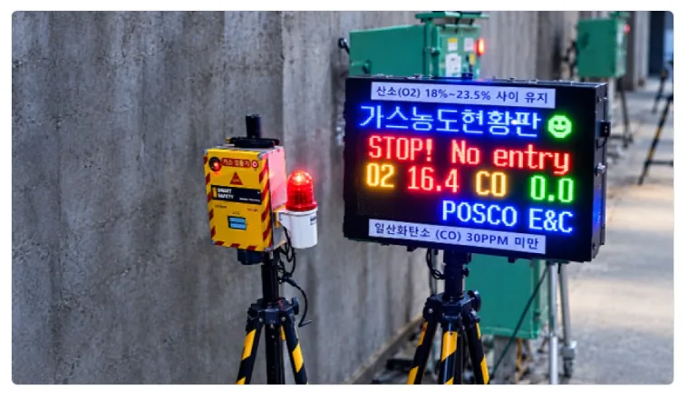
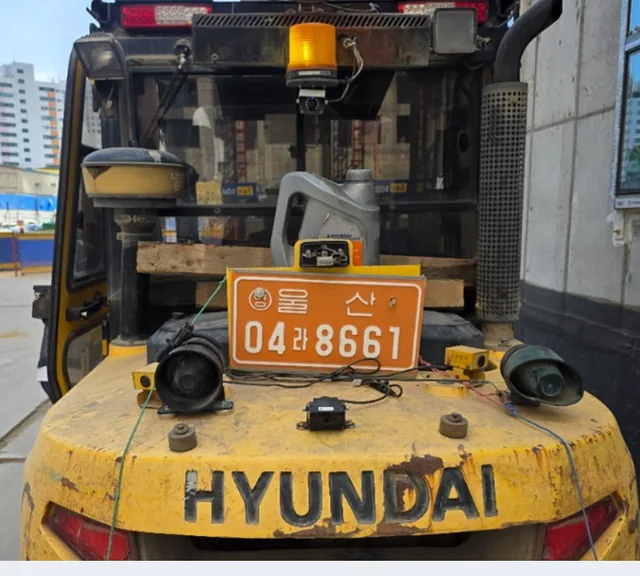
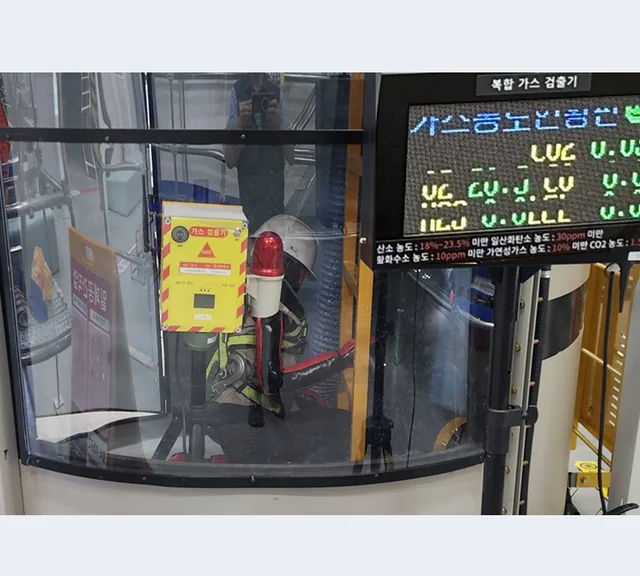
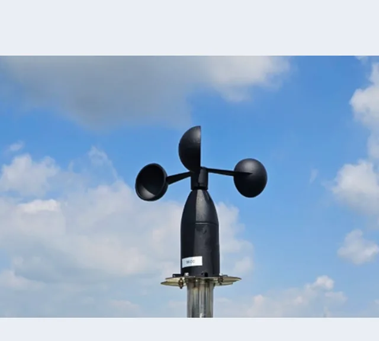

스마트 센서관제 시스템
보이지 않는 위험까지
데이터로 읽고, 즉시 대응합니다
유해가스, 미세먼지, 소음, 기상 등 환경 위험과 추락·중장비 접근 등
작업 위험을 센서로 실시간 감지합니다.
위험 발생 시 현장 경고와 관제 알림으로 신속한 대응을 지원합니다.

도입 효과
- 01
위험 기준 초과 시 현장 경보와 관제 알림을 동시에 전달해 초동 대응 시간 단축
- 02
추락, 협착, 충돌 등 건설현장 주요 사고 유형에 대한 사전 예방
- 03
환경 측정 이력을 기록해 법적 기준 준수 확인과 민원 대응에 활용
- 04
센서 이벤트를 CCTV와 연계해 경보 발생 지점의 영상을 즉시 확인
제품 구성
- 안전고리 센서
안전고리의 체결 여부를 감지해 고소 작업 중 추락 위험을 알립니다.
- 스마트 바디캠
작업자 시점의 영상, 사진, 음성을 기록해 작업 확인과 사고 원인 분석에 활용합니다.
- 안전모 태그
안전모에 부착해 근로자 위치를 확인하고, 비상 상황에서 긴급 호출 기능을 제공합니다.

차량 태그 / 인디게이터중장비 주변에 근로자가 접근하면 운전자와 근로자에게 경보해 협착과 충돌을 예방합니다.
- 소음센서 / 환경전광판
소음을 실시간으로 측정하고 전광판에 표시해 소음 관리 기준 준수를 지원합니다.
- 스마트 미세 먼지 센서
초미세먼지(PM2.5)와 미세먼지(PM10)를 측정해 작업 환경과 비산먼지를 관리합니다.

스마트 가스 센서유해 가스를 감지해 밀폐공간 질식·중독 사고를 예방합니다.
- 화재 감지기 센서
연기와 온도 이상을 실시간으로 감지해 초기 화재를 조기에 발견합니다.
- 불꽃 감지기 센서
용접과 화기 작업 현장의 불꽃을 감지해 화재 발생 즉시 경보합니다.
- 위험 접근 경고 장비
위험 구역에 접근하면 경고등과 음성으로 즉시 알려 사고를 예방합니다.
- 개구부 기울기 센서
개구부 덮개나 주변 구조물의 기울어짐을 감지해 추락 위험을 사전에 알립니다.
- 크람쉘
크람쉘 작업 반경에 접근하면 경고등으로 알려 접촉 사고를 예방합니다.

무선 풍속계풍속을 실시간으로 측정해 타워크레인과 고소 작업의 작업 중지 판단을 지원합니다.
- 체감 온도 센서
폭염과 한파 시 체감 온도를 모니터링하여 온열질환 예방에 활용합니다.
- 차량 속도 감지 센서
현장 내 차량 속도를 측정하고 과속을 경고해 보행자 사고를 예방합니다.
- AC 전원 감지
전원 유무와 정전, 전압 이상을 실시간으로 감지해 전원 장애를 알립니다.